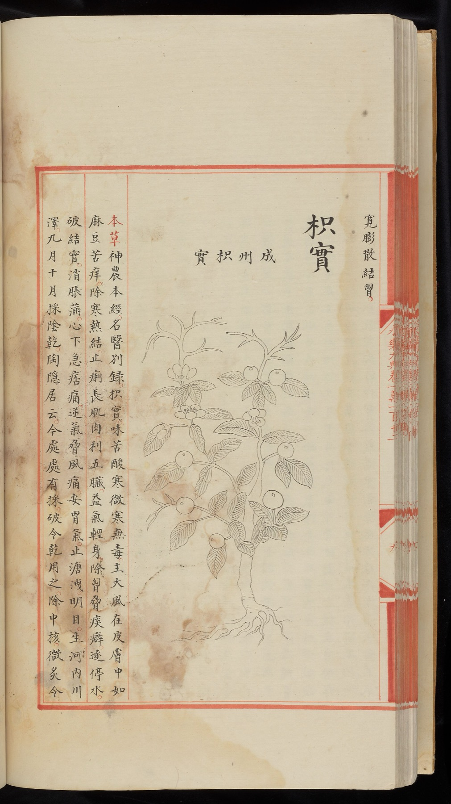
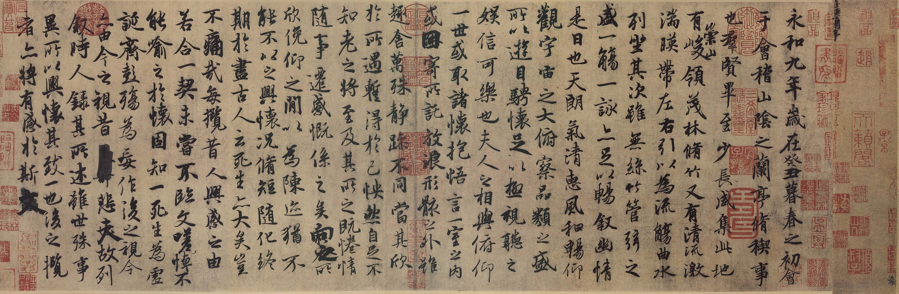
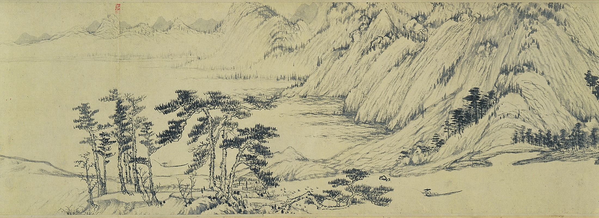
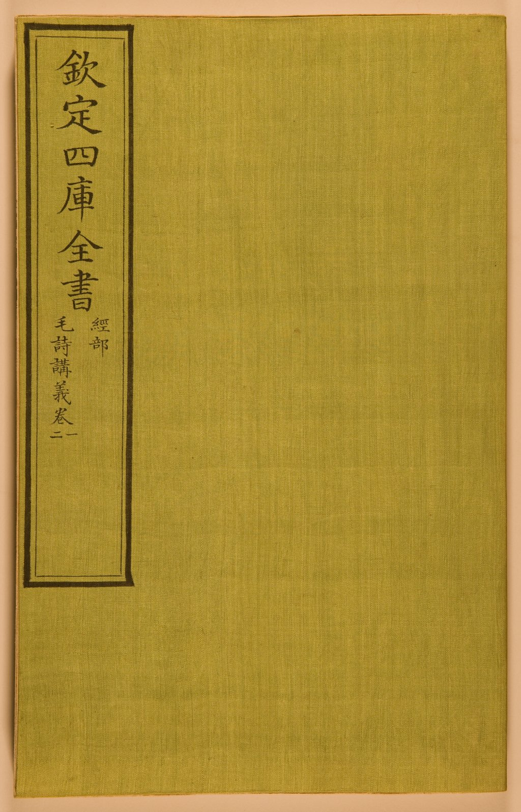

PolyU AI × Digital Humanities Awards 2026 理大人工智能 × 數位人文獎 2026
Use generative AI and digital humanities methods to explore classical texts, thought, premodern history and culture, translation, and language — connecting classical knowledge with the future. 運用生成式人工智能與數位人文方法，研習古典文本、經典思想、古代歷史文化、翻譯與語言——為古典知識搭建通往未來的橋樑。
Competition Objectives比賽宗旨
The PolyU AI × Digital Humanities Awards 2026 is an competition for undergraduate students in the Faculty of Humanities at The Hong Kong Polytechnic University.「理大人工智能 × 數位人文獎 2026」是專為香港理工大學人文學院本科生舉辦的校內活動。
With “AI & Classics” as its theme, the competition encourages students to use artificial intelligence, digital humanities, and related technologies to study classical texts, thought, premodern history and culture, translation, and language in depth, thereby opening new possibilities for classical studies.本屆比賽以「人工智能與經典」為主題，旨在鼓勵學生運用人工智能、數位人文及相關科技，深入研習古典文獻、經典思想、歷史文化、翻譯與語言分析，從而推動人工智能與古典研究的跨界融合。

Eligibility參賽資格
Applicants must be full-time undergraduate students of the PolyU Faculty of Humanities, including but not limited to the following programmes. For the full list, please refer to the Faculty of Humanities website. 參賽者必須為香港理工大學人文學院的全日制本科生，包括但不限於以下課程。完整名單詳見人文學院網站。
- Bachelor’s Degree Scheme in Humanities人文學科課程組合
- BA (Hons) in Chinese History and Culture中國歷史及文化（榮譽）文學士
- BA (Hons) in English and Applied Linguistics英文及應用語言學（榮譽）文學士
- BA (Hons) in Linguistics and Translation語言學及翻譯學（榮譽）文學士
- BSc (Hons) in Language Science and Analytics語言科學與語言數據分析（榮譽）理學士
- BSc (Hons) in Speech Therapy言語治療（榮譽）理學士
Team rules組隊規則
Enter individually or in teams of 2 to 4; no more than 4 members per team.可個人參賽，亦可 2 至 4 人組隊，每隊最多 4 人。
Each student may join only one team; each team may submit only one entry.每名學生只可作為一隊之正式成員，每隊只可提交一份作品。
Cross-programme teams are encouraged, but all members must be enrolled in an eligible programme.鼓勵跨學科組隊，但所有隊員均須來自上述合資格課程。
The Organising Committee reserves the right to verify student status and team eligibility.主辦單位保留核實學生身份及參賽資格之權利。

Theme: AI & Classics主題：「人工智能與經典」
“Classics” may be understood broadly as classical texts, thought, premodern history and culture, images of rare books and historical materials, translation of classics, and related forms of knowledge transmission. Entries may also extend to classical language, reception history, interpretation of classical texts, or cross-cultural translation, provided that their connection to classics or classical learning is clearly explained.所謂「經典」可廣義理解為古典文本、經典思想、古代歷史文化、古籍與歷史材料圖像、經典翻譯及相關知識傳播；亦可延伸至古典語言、古典接受史、經典詮釋或跨文化翻譯，但須清楚說明其與「經典」或「古典學習」的關聯。
- 1Use generative AI to support reading of classical texts, comparative translation, annotation writing, learning activities or interactive Q&A.應用生成式 AI 協助經典文本導讀、翻譯比較、註釋設計、學習活動或互動問答。
- 2Apply NLP, NER, knowledge graphs, GIS and data visualisation to analyse classical texts or historical materials.運用 NLP、NER、知識圖譜、GIS、資料視覺化等方法分析古典文本或歷史材料。
- 3Design an automated AI-agent workflow that connects source extraction, data organisation, content and relationship analysis, and digital presentation for wider dissemination.設計自動化 AI agent workflow，把「提取史料／文本 → 組織與標註 → 分析內容與關係 → 數位化呈現與傳播」串連為完整流程。
- 4Integrate AI-enhanced DH tools (CBDB, MARKUS, DocuSky, Academia Sinica DH platform) for annotation, extraction of persons and place names, comparison and visual analysis.結合 AI-enhanced DH 工具（如 CBDB、MARKUS、DocuSky 及中研院數位人文平台）進行文本標註、人物／地名抽取、資料比對與視覺化分析。
- 5Build datasets, models or retrieval tools for classical texts, figures, place names, concepts or images.建立與古典文獻、人物、地名、概念、圖像相關的資料集、模型或檢索工具。
- 6Use AR/VR, spatial computing, or multimodal storytelling to reimagine classical learning, the presentation of rare books and historical materials, or cultural communication.利用 AR／VR、空間運算、多模態敘事重構古典學習、古籍展示或文化傳播體驗。
- 7Text analysis, comparative translation or recitation reconstruction of classical languages (e.g. Classical Chinese, Sanskrit); reception-history and interpretation of cross-cultural classics.古典語言（如古典漢語、梵文）的文本分析、翻譯比較或誦讀重構，以及跨文化經典的接受史與詮釋研究。
Accepted Forms of Submission可接受的作品形式
Entries are not restricted to a single format and may combine several forms within one project. Each entry must clearly address its relationship to the “AI & Classics” theme and explain its educational, research, or public-communication value.作品不限單一形式，可將多種形式結合於單一作品。作品須清楚回應和主題「AI & Classics」關係，並說明其教育、研究或公共傳播價值。
Research-oriented研究型作品
Use digital-humanities technologies and quantitative methods to analyse and compare data derived from classical texts.透過數位人文技術與量化分析，對古典文獻的數據進行分析與比較。
Tool-oriented工具型作品
Develop software or tools specifically designed for processing classical texts to enhance data-processing efficiency.開發專為處理古典文獻的工具，提升資料處理效率。
Education-oriented教學型作品
Combine digital-humanities technologies with literary and historical knowledge to design engaging and feasible teaching plans or resources.結合數位人文技術與文史知識，設計有趣、可行的教學方案或資源。
Exhibition-oriented展示型作品
Transform classical texts or historical materials into immersive, interactive and publicly accessible media.將古典文獻或歷史材料轉化為沉浸式、可互動的媒介。
Submission Requirements提交要求
All entries and submission materials may be written and presented entirely in Chinese or entirely in English.所有作品及提交材料可用全中文或全英文撰寫及展示。
Register Online & Verify Eligibility網上報名並核實資格
- Team name; each member’s name, student ID and programme; a designated contact person and email.隊伍名稱；每位隊員的姓名、學生編號及就讀課程；指定聯絡人及電郵。
- Provisional title; submission type (Research / Tool / Education / Exhibition); and a paragraph on the link to “AI & Classics”.暫定作品題目、作品類型（研究／工具／教學／展示），及一段作品與「AI & Classics」主題關聯的說明。
- Confirmation of agreement to the competition rules and the AI-use, academic-integrity and IP terms, and that the entry is original.確認已閱讀並同意比賽規則、AI 使用、學術誠信及知識產權條款，且作品為原創。
Submit Your Proposal & Prototype提交作品簡報及原型
- A completed online application form and project abstract.網上報名表及作品摘要。
- Slide deck (PDF/PPT): articulate the problem, review relevant literature, explain the AI method, and present preliminary findings or progress.作品簡報（PDF／PPT）：闡述問題、簡述相關學界研究、說明 AI 應用方法、展示初步研究成果／作品進展。
- AI Use Statement: tools used, purposes, and the scope of human revision, verification and judgement.AI 使用聲明：列明所使用的生成式 AI 工具及其用途，以及人手修改、驗證與判斷的範圍。
- Source Declaration: source and licensing status of all referenced materials and third-party models.資料來源聲明：標明所有引用的文本、史料、譯本、圖像、地圖、資料集或第三方模型的來源或授權情況。
- Preliminary version / prototype appropriate to the type. An unfinished version is acceptable — a text-only description is not.初步版本／原型：按作品類型提交可展示的初步成果。容許初步、未完成版本，但不接受純文字描述。
Final Submission & Live Defence最終提交及決賽答辯
- Project video: max 5 minutes, MP4, minimum 720p.作品介紹短片：最長 5 分鐘，MP4 格式，解析度最低 720p。
- Revised final slide deck covering problem, scholarship, method, findings and limitations.簡報：詳述問題意識、相關學界研究、AI 應用方法、最終研究成果及研究限制。
- A demonstrable version, recorded demo or test link (accessible to judges for at least 3 months).示範版本或連結：測試連結至少三個月内對評審開放。
- Revised AI Use & Source Declarations.修訂版 AI 使用聲明及資料來源聲明。
- Attend the on-site or online final, including the presentation and demonstration.出席現場／線上決賽，進行簡報及示範。
Judging Criteria評審準則
Entries will be assessed across six dimensions: problem relevance, feasibility, innovation, scholarly rigour, social value, and communication.本比賽會從問題關聯、可行性、創新、學術嚴謹、社會價值及表達能力六方面進行評審。
Problem Definition & Relevance to Classics問題界定與 Classics／Humanities 關聯
Whether the project clearly identifies a problem in classical texts, cultures, or premodern history/language, and explains its genuine educational or research relevance.是否清楚指出經典文本、古典文化或古代歷史／語言問題，並說明教育或研究上的實際需要。
Feasibility, Functionality & Technical Realisation可行性與功能性／技術實踐
Whether the work is workable and technically sound; for tool prototypes, whether core functions are demonstrated effectively.作品是否具可操作性、技術設計是否合理；如屬工具原型，是否能有效展示其功能。
Innovation & Creativity創新與創意
Whether the project integrates AI and humanities content in an original way, rather than merely using AI for routine tasks or basic demonstration.AI 與人文內容的結合方式是否新穎，而非僅停留於常規應用或示範性使用。
Scholarly Quality & Research Rigour學術質素與研究嚴謹度
Whether texts, sources, translations, concepts and references are handled accurately and the project is methodologically grounded and well evidenced.文本、史料、譯本、概念與文獻運用是否準確，論證是否有方法、有依據。
Social Impact, Sustainability & Responsible AI社會影響、可持續性與負責任 AI
Whether the project addresses ethics, copyright, bias, sustainability, scalability and educational equity, and reflects in depth on the limitations of AI.是否考慮倫理、版權、偏差、可持續性、可擴展性及教育公平等問題，並能深入反思 AI 的能力與限制。
Presentation Skills展示與表達能力
Whether the team presents problem, method, findings and limitations clearly in the video and final presentation, and responds effectively to the panel’s questions.是否能在作品短片及決賽簡報中清晰介紹研究問題、AI 應用方法、成果及限制，並有效回應評審提問。
Assessment Procedure評審程序
Preliminary Review初審
Preliminary review of written and media materials according to the published criteria.書面及媒體材料初審，由評審根據公布準則評閱所有初賽作品。
Shortlist & Revise入圍及修訂
Shortlisted teams will be announced and invited to revise their projects based on the judging panel’s feedback.公布入圍名單，入圍隊伍按評審意見修訂作品。
Final Presentation決賽
Shortlisted teams present and demonstrate to a multidisciplinary judging panel.入圍隊伍進行簡報及示範，由跨學科評審團作最後評選。
Each shortlisted entry will normally be reviewed by at least three judges with backgrounds in history, language, literature, translation, language sciences, digital humanities, and/or AI applications. External experts may be invited to strengthen fairness and interdisciplinary judgement.每份入圍作品原則上由不少於 3 名評審審閱，評審背景將盡量涵蓋歷史、語言、文學、翻譯、語言科學、數位人文或 AI 應用。主辦單位可邀請校外專家參與，以加強公平性及跨學科視角。

Awards獎項與奬金
Certificates are awarded to winners and shortlisted entries. Awardees may be invited to showcase their work at the award ceremony, on the competition website, on social media, in exhibitions or in related teaching activities.所有得獎及入圍作品可獲證書；主辦單位可邀請得獎者於頒獎典禮、網站、社交媒體、展覽或教學活動中展示其成果。
Any internal disputes among team members over prize distribution, contributions, or authorship should be resolved by the team members themselves. The Organising Committee bears no obligation to mediate.團隊內部若因獎金分配、貢獻度、作者署名等產生糾紛，應由團隊成員自行協商解決；主辦單位不承擔任何調解、仲裁或法律責任。
Indicative Timeline重要日期
AI Use, Academic Integrity & CopyrightAI 使用、學術誠信與版權要求
- 1All entries must be original — no plagiarism, outsourcing, misappropriation or resubmission of previously awarded work.所有作品必須為原創，不得抄襲、委托、冒用或重複提交曾於其他比賽獲獎之作品。
- 2If generative AI is used, teams must declare the tools used, the prompting approach, the scope of AI-generated content, and the extent of human revision, verification, and judgement.如作品使用生成式 AI，必須申報所使用的工具、提示詞、生成內容範圍及人工修訂情況。
- 3The final defence will include an integrity-check session. Teams must be able to explain, reproduce, and, where applicable, re-run any part of their work on the spot, and locate the original source of any citation when requested.決賽答辯設誠信核查環節：隊伍須能即場解釋、重現並重新運行作品的任何部分，並即時定位任何引文的原始出處。
- 4For rare books, maps, images or translation, every cited source must be traceable to a genuine original; AI-generated or unverifiable “sources” will not be accepted.就涉及古籍、地圖、圖像或翻譯的作品，所有引用之來源均須可追溯至真實原件；凡屬 AI 生成或無法核實的「來源」概不符合要求。
- 5Shortlisted teams must keep basic working records, including prompt logs, version histories, source-checking records, and relevant screenshots, until the assessment process is completed. The judging panel may request or spot-check these records.入圍隊伍須保存基本工作紀錄（提示詞紀錄、版本對照、來源核查截圖）至評審程序結束；評審團可要求提交或抽查。
-
6
Participants must comply with copyright, privacy, data protection, and research ethics requirements. Third-party materials must be properly licensed, used with permission, or cited in accordance with fair-use or fair-dealing principles where applicable.參賽者須遵守版權、私隱、資料保護及研究倫理；使用第三方素材須確保合法授權或合理引用。 Download AI-Use Statement (Template)下載 AI 使用聲明（範本）

Intellectual Property & Public Display作品產權與公開展示
Copyright and intellectual property rights in the submitted work shall, in principle, remain with the participants.By submitting an entry, participants grant the Organising Committee a non-exclusive licence to use the submitted work for non-commercial educational, promotional, exhibition, archival, and publicity purposes, with proper acknowledgement of the author or team.作品之著作權及知識產權原則上屬參賽者所有。參賽者授予主辦單位非專屬、僅限非商業教育及宣傳用途的使用權，並保留日後發表、繼續開發及商業轉化的一切權利。主辦單位使用作品時必定註明作者／隊伍。
Protecting sensitive work保護具價值的作品
If a work contains complete source code, datasets, tools, or materials with commercialisation potential, participants may submit a demonstration version, recorded demo, or limited-access version for assessment.如作品包含完整程式碼、資料集或具商業化潛力的工具，參賽者可只提交示範版本或限定存取版本。
The Organising Committee reserves the right to revise, extend, or interpret the competition rules, timeline, and judging arrangements where necessary.主辦單位保留對比賽細則、時程及評審安排作出修訂、延長或解釋之權利，並可於有需要時隨時修訂。
Training & Support培訓及支援
To raise the quality of submissions and encourage broader participation from humanities students, the competition is supported by open-access resources — workshops, demonstration videos, exemplar projects and an FAQ page. Students without advanced programming experience can begin with using existing AI tools, text analysis and instructional design.為提高作品質素並鼓勵更多人文學生參與，比賽將提供公開培訓資源，包括工作坊、示範影片、範例作品及常見問題頁面。即使學生未具備高階編程能力，亦可先通過現成 AI 工具、文本分析與教學設計起步。
Resource學習資源
Programming Historian ↗ — peer-reviewed tutorials on digital methods for the humanities.人文學科數位方法的同行評審教學。
- 1Prompting LLMs for structured annotation in classical-text processing.用大型語言模型提示詞對經典文本進行結構化標注。
- 2Biographical information extraction from classical texts using deep-learning models.運用深度學習模型從古典文本中抽取人物傳記資訊。
- 3Multi-layered text analysis with LLMs, knowledge graphs and GIS.LLM + 知識圖譜 + 地理資訊系統（GIS）的多層次文本分析。
- 4Corpus tools and methods for language and translation studies.面向語言與翻譯研究的語料工具與方法。
Register Now立即報名
The official registration link and website are being finalised. Meanwhile, reach the Organising Committee by email to express interest.官方報名連結尚在籌備中。同學可先電郵主辦單位表達參賽意向。
Submit Entry提交作品
Enquiries查詢
- Registration link:報名連結： TBC / 待定
- Enquiry email:查詢電郵： polyu.ai.dh.awards2026@polyu.edu.hk